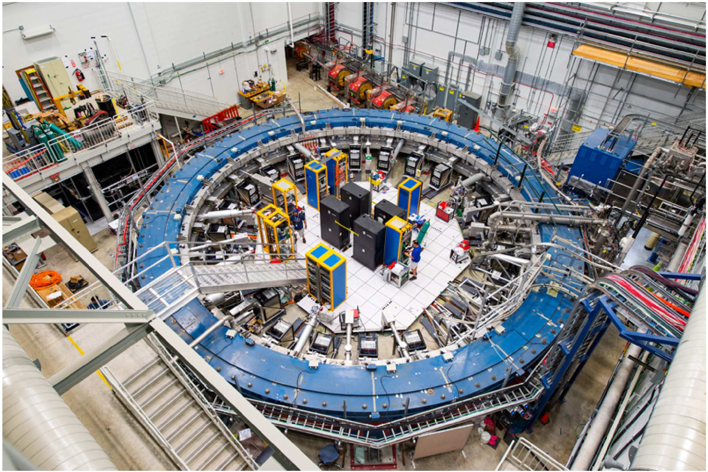

전자와 뮤온(muon)의 자기 모멘트 측정은 현대 물리학에서 가장 정밀한 측정 중 하나이다. 이 측정은 소립자 모형에 대한 매우 정밀한 검증을 제공한다. 실험에서는 양전하를 띤 뮤온(반뮤온(antimuon)이라고도 한다)이 사용된다. 반뮤온의 질량은 전자 질량의 약 200배이고, 반뮤온의 전하는 전자 전하의 절댓값과 같다. 문제 전체에서 간결함을 위해 양전하를 띤 뮤온을 그냥 뮤온이라 부른다.
뮤온(과 전자)은 공간 내 운동과 관련되지 않은 각운동량 $\vec s$를 가진다. 이 각운동량을 뮤온의 스핀(spin)이라 한다. 스핀의 운동은 돌림힘 방정식으로 기술할 수 있는데, 스핀 모멘트의 변화율은 가해진 돌림힘과 같다. 또한 뮤온은 자기 모멘트
\[\vec\mu = g_\mu\,\frac{q}{2m_\mu}\,\vec s\]를 가진다. 여기서 $m_\mu$와 $q$는 뮤온의 질량과 전하이고, $g_\mu = 2(1+a_\mu)$는 무차원 상수이다. 매개변수 $a_\mu$는 자기 모멘트가 “정상” 값($g_\mu = 2$에 해당)으로부터 벗어난 정도를 나타낸다. 이 문제는 자기 모멘트에 대한 비정상 기여 $a_\mu$를 결정하는 실험을 다룬다. 뮤온은 균일한 자기장 속에서 원을 그리며 운동하고, 그 자기 모멘트의 세차 진동수(precession frequency)가 측정된다.

입자물리학에서 에너지는 보통 전자볼트(eV) 단위로 측정된다. 입자 질량 $m$ 대신 정지 에너지 $mc^2$이 사용되며, 그 값 또한 전자볼트 단위로 측정된다. 다음 수치들을 사용할 수 있다:
회전은 회전축을 따라 향하는 각속도 벡터 $\vec\omega$로 기술할 수 있으며, $\vec\omega$의 방향은 오른손 법칙으로 결정된다. 만약 벡터 $\vec A$가 실험실 좌표계에서 각속도 $\vec\omega$로 회전한다면, 그 시간 미분은
\[\frac{d\vec A}{dt} = \vec\omega\times\vec A.\]이제 기준 좌표계 $B$(좌표와 시간 $x', y', z', t'$)가 실험실 기준 좌표계 $A$(좌표와 시간 $x, y, z, t$)에 대해 $x$축을 따라 속도 $V$로 움직인다고 하자. 이 좌표계들의 좌표는 로런츠 변환으로 관계 지어진다
\[x = \gamma(x' + Vt'),\quad t = \gamma\left(t' + \frac{V}{c^2}x'\right),\quad y = y',\quad z = z',\quad \gamma = \frac{1}{\sqrt{1 - V^2/c^2}}.\]모든 답에서 위에 정의된 $\gamma$를 사용하여 식을 간단히 할 수 있다.
만약 움직이는 기준 좌표계 $B$에서 입자의 속도가 $\vec v^{\,\prime}$이고, 좌표축에의 사영이 $v'_x, v'_y, v'_z$라면, 실험실 기준 좌표계에서 그 속도 성분은
\[v_x = \frac{v'_x + V}{1 + \dfrac{v'_x V}{c^2}},\qquad v_y = \frac{v'_y\sqrt{1 - V^2/c^2}}{1 + \dfrac{v'_x V}{c^2}},\qquad v_z = \frac{v'_z\sqrt{1 - V^2/c^2}}{1 + \dfrac{v'_x V}{c^2}}.\]질량 $m$인 상대론적 입자가 속도 $\vec v$로 움직일 때 에너지와 운동량은
\[E = \gamma mc^2,\qquad \vec p = \gamma m\vec v,\qquad \gamma = \frac{1}{\sqrt{1 - v^2/c^2}}.\]입자가 힘 $\vec F$를 받아 움직이면, 운동 방정식은
\[\frac{d\vec p}{dt} = \vec F.\]수치 답이 필요한 문제에서는 유효숫자 세 자리까지 계산해야 한다.
비정상 자기 모멘트 측정 실험에서 뮤온 빔이 자기장 $B = 1.450\ \mathrm{T}$ 속에서 운동한다. 뮤온의 운동량은 자기장에 수직이며 $pc = 3.094\ \mathrm{GeV}$이다. 자기장은 $z$축을 따라 향한다.
이제 뮤온이 앞부분과 동일한 자기장 $B$ 속에서 정지해 있는 경우를 생각하자.
뮤온의 스핀은 그 공간적 운동과 관련되지 않으며, 뮤온이 정지해 있는 기준 좌표계(이러한 좌표계를 동행(comoving) 좌표계라 한다)에서 기술되어야 한다. 만약 뮤온이 가속도를 가지고 운동한다면, 매 순간 서로 다른 동행 기준 좌표계를 선택해야 한다. 두 번의 연속적인 로런츠 변환을 생각하자. 첫 번째 변환은 실험실 좌표계 $A$(좌표 $x, y, t$)로부터 움직이는 좌표계 $B$(좌표 $x', y', t'$)로의 변환이다. 두 번째 변환은 기준 좌표계 $B$로부터 세 번째 기준 좌표계 $C$(좌표 $x'', y'', t''$)로의 변환이다. 이 변환의 조합은 어떤 합성 속도를 가지는 로런츠 변환이 아님이 밝혀진다. 스핀 세차를 일으키는 추가적인 회전이 존재한다. 이 효과를 토머스 세차(Thomas precession)라 한다. 토머스 세차는 순수하게 운동학적인 현상이므로, 이를 기술하기 위해 자기 모멘트의 동역학을 고려할 필요가 없다.
기준 좌표계 $B$가 $A$에 대해 $x$축을 따라 속도 $v_x$로 움직인다고 하자. 다시 기준 좌표계 $C$가 $B$에 대해 $y$축을 따라 속도 $v'_y$로 움직인다. $v'_y \ll v_x$로 가정하고 $v'_y$에 대해 1차까지 다룰 수 있다. 식을 간단히 하기 위해 표기 $\gamma = 1/\sqrt{1 - v_x^2/c^2}$를 사용할 수 있다.
균일한 자기장 속에서 운동하는 뮤온을 생각하자. 뮤온 스핀의 세차는 두 가지 요인으로 결정된다: 자기장과의 직접적인 상호작용, 그리고 가속 운동으로 인한 토머스 세차. 자기장으로 인한 세차의 각속도는 뮤온이 정지한 경우 문제 A6에서 얻은 식으로 계산할 수 있다. 이하에서는 어디서나 뮤온의 스핀이 뮤온 운동 평면에 평행하다고 간주한다.